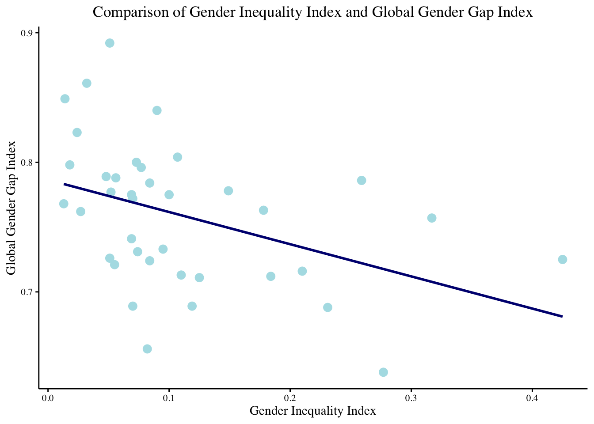
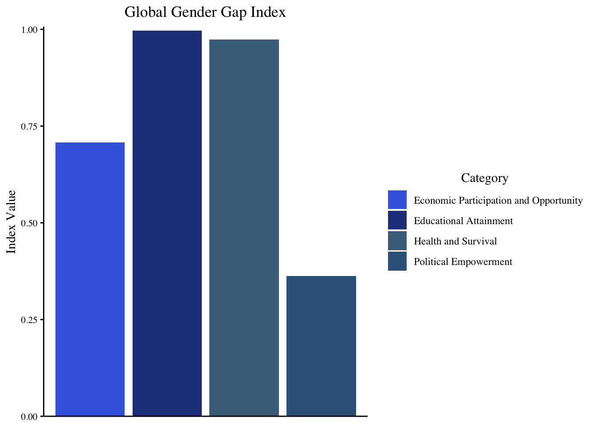
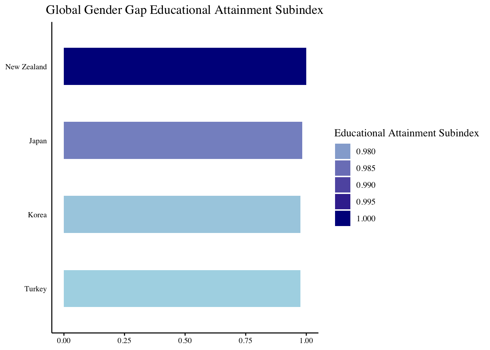

The Global Gender Gap Index 2006-2023
Gender Equality
Maveen Mallah 1
mm3664a@american.edu
1 School of International Service (SIS), American University
Abstract
Research Question: Does the Gender Inequality Index (GII) serve as a reliable predictor of gender disparities, as measured by the Global Gender Gap Index (GGGI), across countries?
Methodology: This study utilized data from the Quality of Government Institute and the United Nations Development Program to investigate gender inequality through the Global Gender Gap Index (GGGI). The dataset comprised 153 countries, with a random sample of 38 countries being analyzed. Descriptive statistics and visualizations were employed to explore the distribution and trends in both the Gender Inequality Index (GII) and the Global Gender Gap Index (GGGI).
Major Findings: The findings from these visuals collectively support the notion that the Gender Inequality Index (GII) serves as a reliable predictor of gender disparities, as measured by the Global Gender Gap Index (GGGI), across countries. The linear relationship observed, along with the insights gained from the comparative overview and specific examination of educational attainment disparities, reinforces the significance of the GII in understanding and addressing gender inequality on a global scale.
Methods/ Data
- Overall, the study employed a combination of data analysis techniques, including descriptive statistics and data visualization, to examine gender inequality using the GGGI across selected countries. The findings aimed to contribute to a better understanding of the current state of gender equality and inform efforts to address gender disparities in various domains.
Results
Gender Inequality Index (GII) and the Global Gender Gap Index (GGGI)
The Gender Inequality Index (GII) variable “gii_gii” quantifies gender disparities in reproductive health, empowerment, and economic status, indicating greater inequality with higher values. The Global Gender Gap Index (GGGI) variable “ggi_ggi” assesses gender disparities across Economic Participation and Opportunity, Educational Attainment, Health and Survival, and Political Empowerment categories.
The graph displays a linear relationship between “gii_gii” and “ggi_ggi”, suggesting that as gender inequality measured by GII increases, gender disparities measured by GGGI also tend to increase.

| Estimate | Std. Error | t value | Pr(>|t|) | |
|---|---|---|---|---|
| (Intercept) | 0.7864537 | 0.0130623 | 60.20775 | 0.0000000 |
| gii_gii | -0.2483188 | 0.0919502 | -2.70058 | 0.0104829 |
Global Gender Gap Index (GGGI):
The Global Gender Gap Index (GGGI) utilizes four variables, including Economic Participation and Opportunity “gggi_pos”, Educational Attainment “gggi_eas”, Health and Survival “gggi_hss”, and Political Empowerment “gggi_pes”, to assess country progress towards gender parity across thematic dimensions.
The graph provides a comparative overview of gender gaps across countries, illustrating variations in gender disparities in Economic Participation and Opportunity, Educational Attainment, Health and Survival, and Political Empowerment categories.

| Min | Q1 | Median | Mean | Q3 | Max |
|---|---|---|---|---|---|
| 0.638 | 0.72175 | 0.7655 | 0.7592105 | 0.78875 | 0.892 |
Educational Attainment Subindex:
The Educational Attainment Subindex, represented by the variable “ggi_eas”, highlights the disparity between women and men in current access to education, including ratios of women to men in primary-, secondary-, and tertiary-level education. Additionally, it provides a long-term perspective on a country’s ability to educate both genders equally through the ratio of female literacy rate to male literacy rate.
The graph compares the Educational Attainment Subindex scores of selected outliers (Turkey, Korea, Japan, and New Zealand), allowing for easy identification of variations and patterns in gender disparities in educational attainment across these countries.

| Min | Q1 | Median | Mean | Q3 | Max |
|---|---|---|---|---|---|
| 0.975 | 0.997 | 1 | 0.9968421 | 1 | 1 |
Discussion
Linear Relationship between GII and GGGI: The first visual analysis revealed a clear linear relationship between the GII and GGGI, indicating that as gender inequality, as measured by the GII, increases, gender disparities across various dimensions, as measured by the GGGI, also tend to increase. This suggests that the GII can serve as a reliable predictor of gender disparities captured by the GGGI, providing valuable insights into the overall gender gap within countries.
Comparative Overview of Gender Gaps: The second visual provided a comprehensive overview of gender gaps across countries, highlighting variations in gender disparities across Economic Participation and Opportunity, Educational Attainment, Health and Survival, and Political Empowerment categories. By examining these disparities, we can better understand how different factors contribute to overall gender inequality and how they relate to the GII and GGGI.
Comparison of Educational Attainment Subindex: The third visual focused specifically on the Educational Attainment Subindex, comparing scores of selected outliers across countries. This comparison allows for the identification of specific patterns and variations in gender disparities in educational attainment, further supporting the relationship between the GII and GGGI.
Acknowledgements
- Quality of Government Institute. (2024). The Global Gender Gap Index 2006-2023. https://www.gu.se/en/quality-government